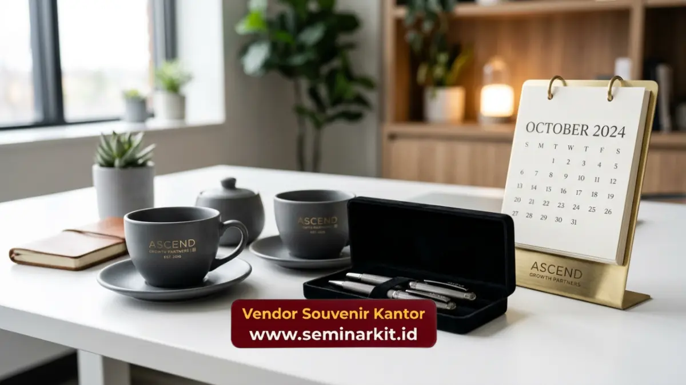

Souvenir corporate gifts adalah hadiah bisnis yang diberikan perusahaan kepada klien, mitra, atau relasi bisnis sebagai bentuk penghargaan dan penguat hubungan profesional.
Berbeda dengan souvenir internal untuk karyawan, corporate gifts lebih menekankan kesan elegan dan premium karena ditujukan untuk pihak eksternal yang mewakili citra perusahaan di mata mitra bisnis.
Pemilihan corporate gifts yang tepat mampu meninggalkan kesan mendalam sekaligus memperkuat kepercayaan dalam relasi bisnis jangka panjang.
- Souvenir corporate gifts ditujukan untuk memperkuat hubungan dengan klien dan mitra bisnis eksternal
- Kesan elegan dan premium menjadi faktor utama dalam pemilihan corporate gifts
- Momen pemberian corporate gifts perlu disesuaikan dengan konteks hubungan bisnis
- vendorsouvenirkantor.web.id menyediakan pilihan corporate gifts premium siap custom logo perusahaan Anda
Apa Itu Souvenir Corporate Gifts?
Souvenir corporate gifts adalah hadiah yang diberikan perusahaan kepada pihak eksternal, seperti klien, investor, atau mitra bisnis, dalam konteks profesional tertentu.
Pemberian corporate gifts umumnya dilakukan pada momen-momen penting dalam hubungan bisnis, seperti penandatanganan kontrak, kunjungan kerja, atau perayaan kerja sama tahunan.
Berbeda dari hadiah personal biasa, corporate gifts dirancang dengan mempertimbangkan citra profesional perusahaan pemberi.
Elemen seperti kualitas kemasan, material produk, dan sentuhan personalisasi logo menjadi bagian penting yang membedakan corporate gifts dari merchandise promosi biasa.
Mengapa Corporate Gifts Penting dalam Hubungan Bisnis?
Corporate gifts penting dalam hubungan bisnis karena berfungsi sebagai simbol penghargaan yang memperkuat kepercayaan dan hubungan jangka panjang antara perusahaan dengan klien atau mitra bisnisnya.
Pemberian hadiah yang tepat dapat meninggalkan kesan positif yang berdampak pada keberlanjutan kerja sama di masa mendatang.
Membangun Kesan Profesional yang Berkesan
Corporate gifts yang dipilih dengan cermat mencerminkan tingkat perhatian dan profesionalisme perusahaan terhadap relasi bisnisnya.
Kesan pertama yang baik melalui pemberian hadiah berkualitas dapat menjadi pembeda dalam persaingan bisnis yang semakin ketat.
Memperkuat Loyalitas Klien Jangka Panjang
Pemberian corporate gifts secara konsisten pada momen-momen penting turut membangun loyalitas klien terhadap perusahaan.
Klien yang merasa dihargai cenderung memiliki kecenderungan lebih tinggi untuk melanjutkan kerja sama bisnis di masa mendatang.
Produk Apa yang Cocok Dijadikan Souvenir Corporate Gifts?
Produk yang cocok dijadikan souvenir corporate gifts meliputi paket hampers premium, perlengkapan kerja eksekutif, dan merchandise berbahan material berkualitas tinggi seperti kulit atau kayu. Pemilihan produk ini didasarkan pada kesan elegan yang perlu ditampilkan untuk pihak eksternal.
Paket hampers premium berisi kombinasi produk berkualitas, seperti makanan ringan pilihan dan perlengkapan personal, menjadi pilihan populer untuk momen perayaan akhir tahun bersama klien.
Perlengkapan kerja eksekutif seperti organizer kulit atau set alat tulis premium juga sering dipilih karena mencerminkan kesan profesional yang tinggi.
Produk berbahan material premium, seperti kayu atau kulit asli, umumnya digunakan untuk momen bisnis yang lebih formal, seperti penandatanganan kontrak kerja sama strategis. Material tersebut memberikan kesan mewah sekaligus daya tahan yang lebih baik dibanding material standar.

Bagaimana Cara Memilih Corporate Gifts yang Tepat untuk Klien?
Cara memilih corporate gifts yang tepat untuk klien meliputi penyesuaian dengan konteks hubungan bisnis, tingkat formalitas acara, serta preferensi umum industri tempat klien tersebut beroperasi. Penyesuaian ini penting agar hadiah yang diberikan terasa relevan dan bermakna bagi penerimanya.
Untuk klien di sektor korporat formal, pemilihan corporate gifts umumnya condong ke arah produk dengan desain minimalis dan material premium, seperti kulit atau logam.
Sementara untuk klien di industri kreatif, produk dengan sentuhan desain yang lebih dinamis dan personal dapat menjadi pilihan yang lebih sesuai.
Konteks acara pemberian juga perlu diperhatikan. Corporate gifts untuk acara formal seperti penandatanganan kontrak umumnya berbeda dengan gifts untuk momen perayaan tahunan yang lebih santai. Penyesuaian ini membantu memastikan hadiah yang diberikan sesuai dengan suasana dan tujuan acara.
Souvenir corporate gifts merupakan instrumen penting dalam membangun dan memperkuat hubungan bisnis jangka panjang dengan klien maupun mitra perusahaan.
Pemilihan produk yang elegan dan sesuai konteks hubungan bisnis menjadi kunci keberhasilan strategi corporate gifting. Segera konsultasikan kebutuhan corporate gifts perusahaan Anda bersama vendorsouvenirkantor.web.id.

Banner promosi: klik gambar untuk langsung terhubung ke WhatsApp tim sales.